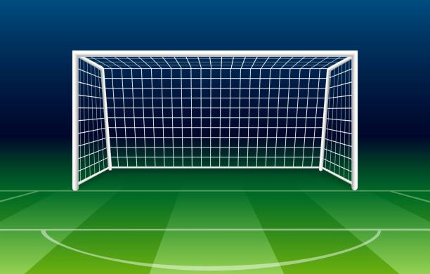

<ion-content>
  
  <map name="workmap1" *ngIf="refresh">
    <area shape="" (click)="dismiss(sector.supIzquierda)" coords="{{x1}},{{y1}},{{x2/3}},{{y1 + (y2-y1)/3}}"  alt="">
    <area shape="" (click)="dismiss(sector.supCentro)" coords="{{x2/3}},{{y1}},{{2*x2/3}},{{y1 + (y2-y1)/3}}"  alt="">
    <area shape="" (click)="dismiss(sector.supDerecha)" coords="{{2*x2/3}},{{y1}},{{x2}},{{y1 + (y2-y1)/3}}"  alt="">
    <area shape="" (click)="dismiss(sector.centroIzq)" coords="{{x1}},{{y1 + (y2-y1)/3}},{{x2/3}},{{y1 + 2*(y2-y1)/3}}"  alt="">
    <area shape="" (click)="dismiss(sector.centroCentro)" coords="{{x2/3}},{{y1 + (y2-y1)/3}},{{2*x2/3}},{{y1 + 2*(y2-y1)/3}}"  alt="">
    <area shape="" (click)="dismiss(sector.centroDer)" coords="{{2*x2/3}},{{y1 + (y2-y1)/3}},{{x2}},{{y1 + 2*(y2-y1)/3}}"  alt="">
    <area shape="" (click)="dismiss(sector.infIzq)" coords="{{x1}},{{y1 + 2*(y2-y1)/3}},{{x2/3}},{{y2}}"  alt="">
    <area shape="" (click)="dismiss(sector.infCentro)" coords="{{x2/3}},{{y1 + 2*(y2-y1)/3}},{{2*x2/3}},{{y2}}"  alt="">
    <area shape="" (click)="dismiss(sector.infDer)" coords="{{2*x2/3}},{{y1 + 2*(y2-y1)/3}},{{x2}},{{y2}}"  alt="">
  </map>
  <ion-button (click)="refreshMap()">a</ion-button>
</ion-content>